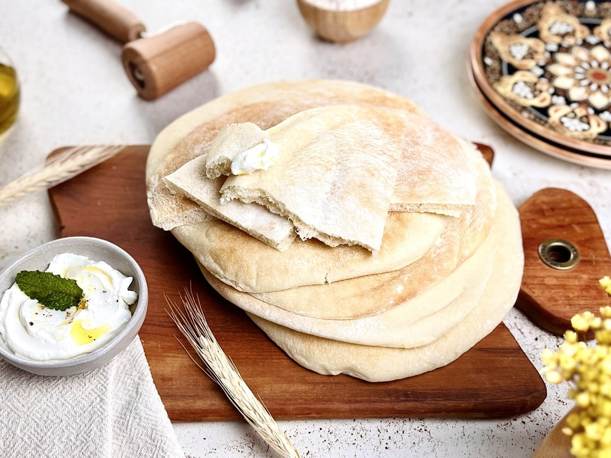
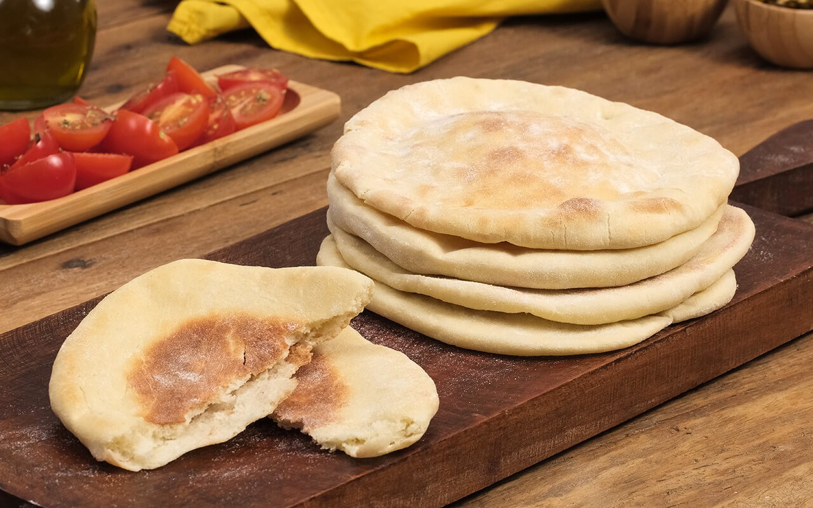
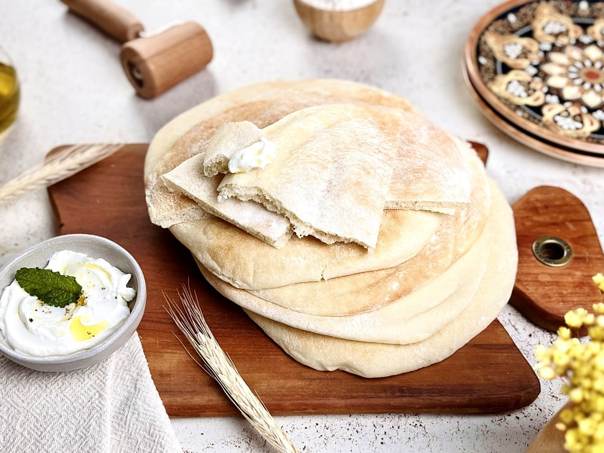
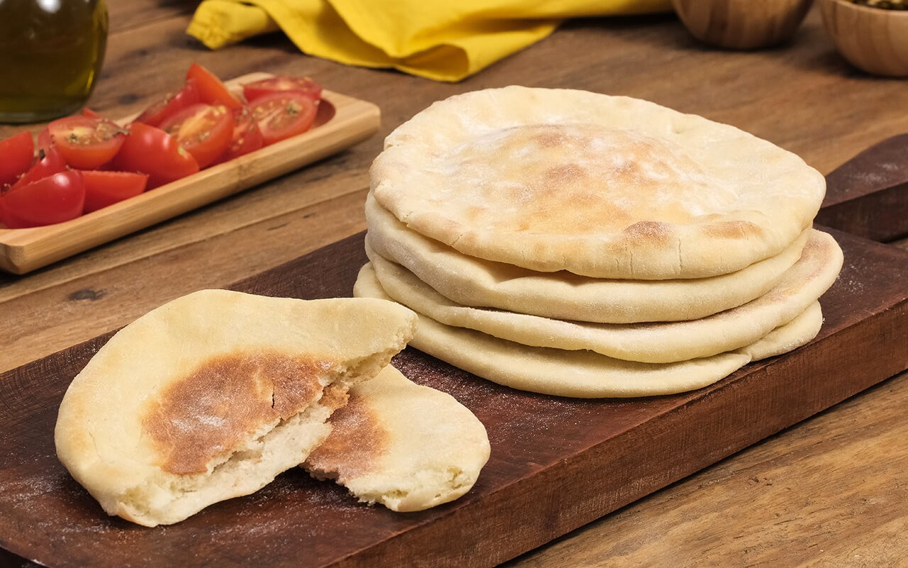

Pão Sírio
 



O Pita, também conhecido como pão sírio ou pão árabe, é um pão de trigo tipo “envelope”. É um pão folha versátil que, quando assado em alta temperatura, estufa criando uma bolsa de ar, perfeita para ser recheada como um sanduíche. É extremamente popular em todo o Oriente Médio, Turquia e países vizinhos.
RECEITA TRADICIONAL
Ingredientes:
- 500g de farinha de trigo (aprox. 4 xícaras)
- 300ml de água morna
- 10g de fermento biológico seco (1 sachê)
- 1 colher (sopa) de açúcar
- 1 colher (chá) de sal
- 2 colheres (sopa) de azeite de oliva
Modo de Preparo:
- Ativar o fermento: Em uma tigela pequena, misture o fermento, o açúcar e um pouco da água morna. Deixe descansar por 10 minutos até formar uma espuma.
- Misturar a massa: Em uma tigela grande, misture a farinha e o sal. Faça um buraco no meio e adicione a mistura do fermento ativado, o azeite e o restante da água morna.
- Sovar: Misture até formar uma massa. Transfira para uma bancada enfarinhada e sove por cerca de 10 minutos, até que a massa fique lisa e elástica.
- Primeiro descanso: Coloque a massa em uma tigela untada com azeite, cubra com um pano úmido e deixe descansar em local morno por 1 hora (ou até dobrar de tamanho).
- Modelar: Divida a massa em 8 a 10 bolinhas iguais. Abra cada uma com um rolo até formar discos finos (cerca de 0,5cm de espessura). Deixe os discos descansarem por mais 15 minutos cobertos.
- Preparar o forno: Enquanto os discos descansam, pré-aqueça o forno na temperatura máxima (250°C ou mais). Coloque a assadeira vazia dentro do forno para que ela fique muito quente.
- Assar: Coloque os discos de massa rapidamente sobre a assadeira super quente. Asse por 2 a 4 minutos. O choque térmico fará o pão estufar como um balão.
- Finalizar: Retire do forno e cubra imediatamente com um pano de prato limpo e seco para abafar e mantê-los macios enquanto esfriam.
Bom apetite!